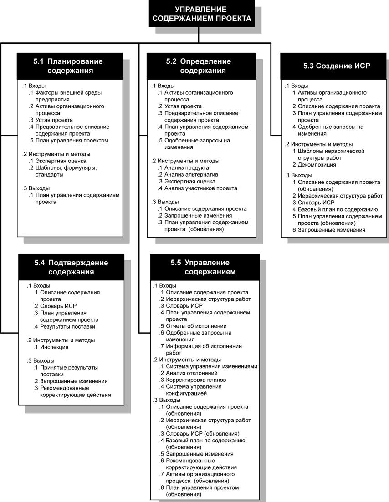
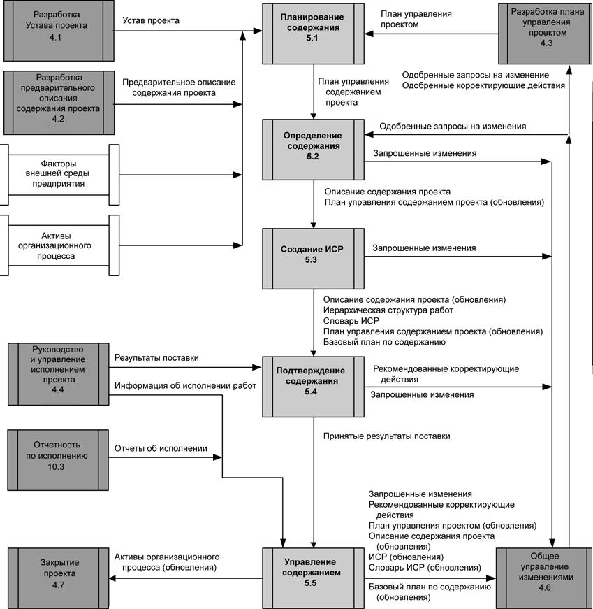

Введение
Управление содержанием проекта включает в себя процессы, обеспечивающие включение в проект всех тех и только тех работ, которые необходимы для успешного выполнения проекта. Оно непосредственно связано с определением и контролем того, что включено или не включено в проект. На рис. 7.1 приведена общая схема процессов управления содержанием проекта, а на рис. 7.2 - диаграмма зависимостей для этих процессов с их входами, выходамии прочими процессами в области знаний.

Рисунок 7.1 - Общая схема процессов управления содержанием проекта

Рисунок 7.2 - Диаграмма зависимостей для этих процессов с их входами, выходамии прочими процессами в области знаний
Рассмотрим составляющие рис. 7.1 боле детально.
5.1 Планирование содержания - создание плана управления содержанием проекта, в котором документируется процесс формулирования, верификации и контроля содержания проекта, а также процесс создания и формулирования иерархической структуры работ (ИСР).
5.2 Определение содержания - разработка подробного описания содержания проекта в качестве основы для принятия будущих решений по проекту.
5.3 Создание ИСР - разбиение крупных результатов поставки проекта и
проектных работ на более мелкие, более управляемые элементы.
5.4 Подтверждение содержания - формализация принятия завершенных результатов поставки проекта.
5.5. Управление содержанием - управление изменениями содержания проекта.
Эти процессы взаимодействуют друг с другом, а также с процессами из других областей знаний. Каждый процесс может включать в себя действия одного или нескольких лиц или групп лиц, в зависимости от потребностей проекта. Каждый процесс происходит в каждом проекте как минимум один рази в одной или нескольких фазах проекта, если проект разбит на фазы.
В контексте управления проектами термин "содержание" может относиться к следующим понятиям:
- Содержание продукта. Свойства и функции, которые характеризуют продукт, услугу или результат.
- Содержание проекта. Работы, которые необходимо выполнить, чтобы получить продукт, услугу или результат с указанными характеристиками и функциями.
Здесь рассматриваются процессы, предназначенные для управления содержанием проекта. Эти процессы управления содержанием проекта и связанные с ними инструменты и методы различаются в зависимости от области приложения. Они обычно определяются как часть жизненного цикла проекта и фиксируются в плане управления содержанием проекта.
Одобренное подробное описание содержания проекта вместе с ИСР и словарем ИСР представляют собой базовый план по содержанию проекта.
Результатом проекта обычно является один продукт. Однако этот продукт может включать в себя дополнительные компоненты, каждый из которых имеет самостоятельное содержание, но все содержания находятся во взаимосвязи друг с другом. Например, новая телефонная система в общем случае будет включать в себя четыре компонента: аппаратуру, программное обеспечение, обучение и внедрение.
Реализация содержания проекта сравнивается с планом управления проектом, описанием содержания проекта с ИСР и словарем ИСР, но реализация содержания продукта сравнивается с требованиями к продукту.